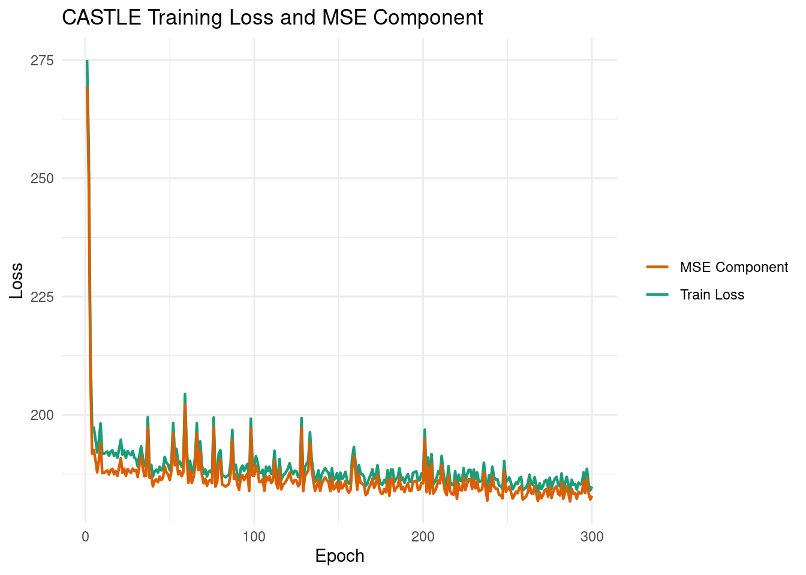
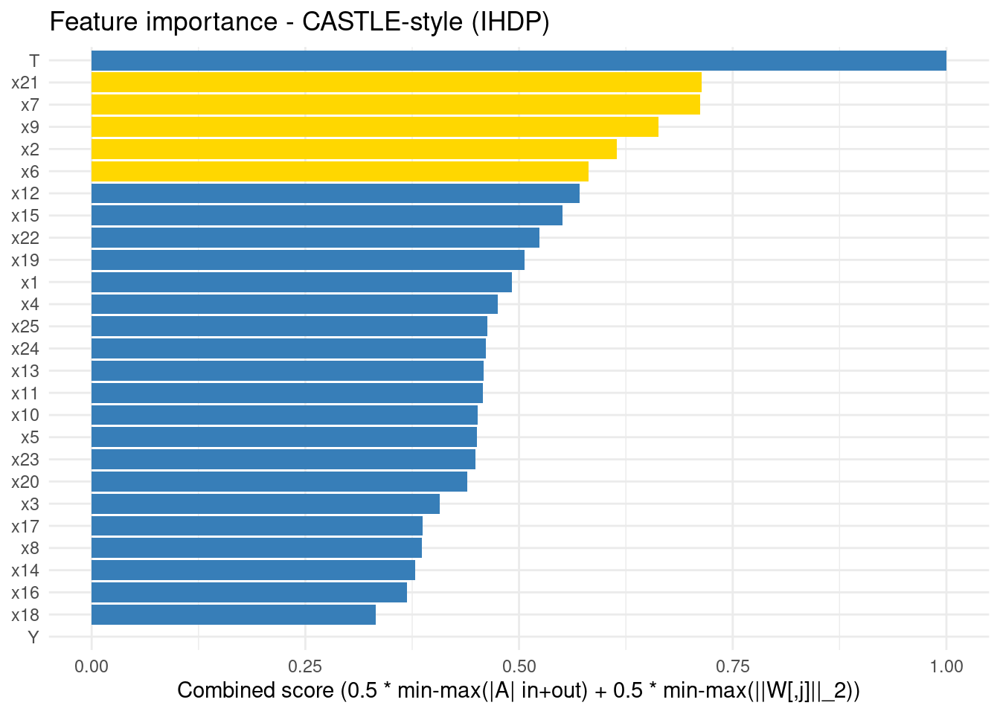
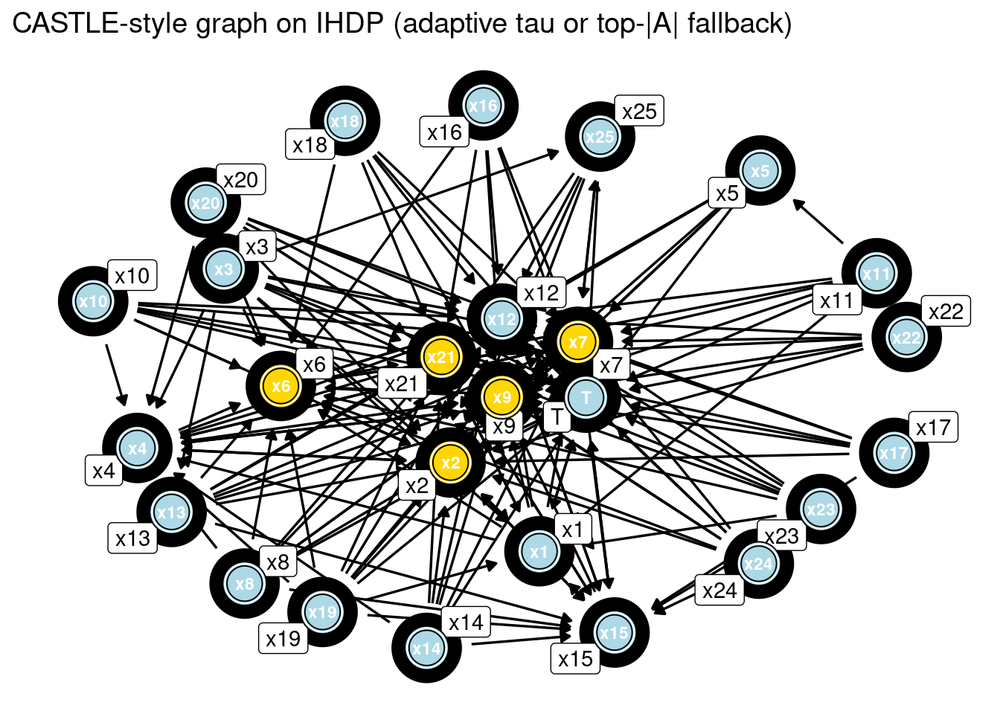
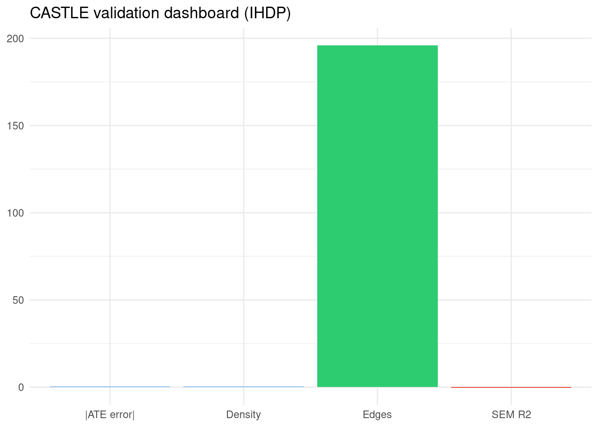

Code
packages <- c(
'tidyverse',
'RCausalML',
'causaldata',
'torch',
'dagitty',
'ggdag',
'igraph')

CASTLE is a deep learning method published at NeurIPS 2020 by Trent Kyono, Yao Zhang, and Mihaela van der Schaar (van der Schaar Lab, Cambridge). Its core idea is deceptively elegant:
Instead of treating causal structure learning and supervised prediction as separate problems, CASTLE solves both simultaneously — using causal graph discovery as a regularizer for the supervised model.
Standard regularizers like L1, L2, and dropout all share the same blindspot: they are agnostic of the causal relationships between variables, limiting their potential to identify optimal predictors based on graphical topology, such as the causal parents of the target variable.
There is also a deeper theoretical motivation: prior works have shown that prediction in the causal direction (effect from cause) results in lower testing error than the anti-causal direction. CASTLE exploits this directly.
Similarly, reconstruction-based regularizers like Supervised AutoEncoders (SAE) are wasteful: supervised auto-encoders suboptimally reconstruct all features, including those without causal neighbors — naively reconstructing these variables does not improve regularization, and in some cases may be harmful, e.g., reconstructing a random noise variable.
CASTLE’s architecture is a multi-objective neural network that learns a weighted adjacency matrix representing the causal graph, while simultaneously optimizing for supervised prediction and selective reconstruction. The key components are:
A embedded in the input layer encodes the causal graph structure
CASTLE learns the causal directed acyclical graph as an adjacency matrix embedded in the neural network’s input layers, thereby facilitating the discovery of optimal predictors.
Concretely, a learnable weight matrix W (\(d \times d\), where \(d\) is the number of features) is placed at the input layer. Entry \(W_{ij} > 0\) means “variable \(X_i\) causes \(X_j\).” The network simultaneously learns both the prediction weights and these causal edge weights end-to-end via backpropagation.
CASTLE borrows the NOTEARS acyclicity constraint:
\[ h(W) = \operatorname{tr}\left(e^{W \odot W}\right) - d = 0 \]
This is a differentiable algebraic condition that equals zero if and only if W represents a DAG. It prevents cycles from forming during training without any combinatorial search — gradient descent handles it naturally.
CASTLE defines a multi-objective learning target: on one hand, a neural network that performs well on a supervised main-task (e.g., predicting housing prices); on the other hand, the network discovers the graphical structure of the underlying data-generating process, where the function learnt by the neural network is guided by the structure of the graphical model.
The total loss has three components:
\[ \mathcal{L}_{\text{CASTLE}} = \mathcal{L}_{\text{prediction}} + \lambda_1 \cdot \mathcal{L}_{\text{reconstruction}} + \lambda_2 \cdot \mathcal{L}_{\text{acyclicity}} \]
The key innovation is the selective reconstruction: CASTLE efficiently reconstructs only the features in the causal DAG that have a causal neighbor, whereas reconstruction-based regularizers suboptimally reconstruct all input features. This means noise variables — those with no causal neighbors — are simply ignored in the reconstruction loss, preventing them from polluting the learning signal.
Once the DAG is learned, CASTLE automatically identifies the causal parents of Y — the minimal set of variables that d-separate Y from everything else. These are the theoretically optimal predictors, not just correlated ones. This is a form of principled, causally-justified feature selection baked directly into the training loop.
| Output | What It Is | Use |
|---|---|---|
| Prediction model fY | Neural network trained with causal regularization | Out-of-sample prediction, more robust than standard DNN |
| Causal DAG G | Adjacency matrix W thresholded after training | Causal graph for downstream analysis, interpretability |
Compared to existing methods, CASTLE provides four capabilities together: feature selection, structure learning, causal prediction, and target selection — while capacity-based regularizers only do feature selection, and supervised autoencoders only do structure learning.
| Regularizer | Feature selection | Learns causal structure | Causal prediction | Selective reconstruction |
|---|---|---|---|---|
| L1 / L2 / Dropout | ✓ | ✗ | ✗ | ✗ |
| SAE (Supervised Autoencoder) | ✗ | ✓ | ✗ | ✗ |
| CASTLE | ✓ | ✓ | ✓ | ✓ |
MIRACLE, published at NeurIPS 2021 from the same lab, extends CASTLE’s idea to the missing data setting: it imputes data in such a way that the completed dataset remains consistent with the underlying causal structure, using a regularization scheme that encourages any baseline imputation method to respect causal relationships.
We use {RCuasalML}s CASTLE implementation (torch-based when available, else a placeholder) to fit the model on the IHDP semi-synthetic dataset.
packages <- c(
'tidyverse',
'RCausalML',
'causaldata',
'torch',
'dagitty',
'ggdag',
'igraph')# Install missing packages
#new_packages <- packages[!(packages %in% installed.packages()[,"Package"])]
#if(length(new_packages)) install.packages(new_packages)# Use local RCausalML when rendering from package root, tutorials/, or sibling repo
find_pkg_root <- function() {
root_candidates <- c(
".", "..", "../..",
file.path("..", "RCausalML"),
file.path("../..", "RCausalML")
)
for (p in root_candidates) {
if (file.exists(file.path(p, "DESCRIPTION")) &&
file.exists(file.path(p, "R", "causalDeepNet.R"))) {
return(normalizePath(p))
}
}
NULL
}
pkg_root <- find_pkg_root()
if (!is.null(pkg_root) && requireNamespace("devtools", quietly = TRUE)) {
try(devtools::load_all(pkg_root, quiet = TRUE), silent = TRUE)
}
invisible(lapply(packages, function(pkg) {
suppressPackageStartupMessages(library(pkg, character.only = TRUE))
}))
rcm_ns <- asNamespace("RCausalML")
castle_fns <- c("castle")
missing <- castle_fns[!vapply(
castle_fns,
function(fn) exists(fn, mode = "function", where = rcm_ns, inherits = FALSE),
logical(1L)
)]
if (length(missing) > 0L) {
stop(
"Missing in RCausalML namespace: ", paste(missing, collapse = ", "), ".\n",
"Reinstall from the package root:\n",
" devtools::load_all(\"../RCausalML\") or devtools::install(\"../RCausalML\")"
)
}
for (fn in castle_fns) {
if (!exists(fn, mode = "function", inherits = FALSE)) {
assign(fn, get(fn, envir = rcm_ns), envir = .GlobalEnv)
}
}run_fast <- TRUE
device_use <- NULL
SEED <- 42L
if (requireNamespace("torch", quietly = TRUE)) {
device_use <- if (torch::cuda_is_available()) {
ok <- tryCatch({
x <- torch::torch_tensor(1.0, device = "cuda")
torch::torch_matmul(x, x)
TRUE
}, error = function(e) FALSE)
if (ok) "cuda" else "cpu"
} else {
"cpu"
}
}
cat("Using device:", device_use, "\n")Using device: cuda set.seed(SEED)
if (requireNamespace("torch", quietly = TRUE)) {
torch::torch_manual_seed(SEED)
}IHDP is small per replication (~6.7k rows after merging the nine NPCI CSVs). Setting replications=100 stacks 100 copies for Monte Carlo–style benchmarks but needs large RAM and can stress the machine; this tutorial defaults to replications=1.
The next cell defines Z_train, Z_test (needed for Z_test_t in training), Z_test_eval (float64 copy for metrics), and cols.
build_causal_matrix <- function(x, t, y, subsample = 5000L, seed = 42) {
set.seed(seed)
Z <- cbind(x, t, y)
idx <- sample.int(nrow(Z), size = min(as.integer(subsample), nrow(Z)), replace = FALSE)
Z[idx, , drop = FALSE]
}
VAR_NAMES <- c(sprintf("x%d", 1:25), "T", "Y")
Y_IDX <- length(VAR_NAMES)
data_loading_ihdp <- function(train_rate = 0.8, replications = 1L) {
base_url <- "https://raw.githubusercontent.com/uber/causalml/master/docs/examples/data/ihdp_npci_"
dfs <- lapply(1:9, function(i) read.csv(sprintf("%s%d.csv", base_url, i), header = FALSE))
df <- bind_rows(dfs)
colnames(df) <- c(
"treatment", "y_factual", "y_cfactual", "mu0", "mu1",
sprintf("x%d", 1:25)
)
if (replications > 1L) {
df <- bind_rows(replicate(replications, df, simplify = FALSE))
}
x <- as.matrix(df[, sprintf("x%d", 1:25)])
t <- as.numeric(df$treatment)
y <- as.numeric(df$y_factual)
potential_y <- as.matrix(df[, c("mu0", "mu1")])
n <- nrow(x)
idx <- sample.int(n)
train_n <- floor(train_rate * n)
train_idx <- idx[seq_len(train_n)]
test_idx <- idx[(train_n + 1):n]
list(
train_x = x[train_idx, , drop = FALSE],
train_t = t[train_idx],
train_y = y[train_idx],
train_potential_y = potential_y[train_idx, , drop = FALSE],
test_x = x[test_idx, , drop = FALSE],
test_potential_y = potential_y[test_idx, , drop = FALSE],
df = df
)
}
preprocess_features <- function(train_x, test_x) {
a <- train_x
b <- test_x
m <- colMeans(train_x[, 1:6, drop = FALSE])
s <- apply(train_x[, 1:6, drop = FALSE], 2, sd)
s[s == 0] <- 1
a[, 1:6] <- scale(train_x[, 1:6, drop = FALSE], center = m, scale = s)
b[, 1:6] <- scale(test_x[, 1:6, drop = FALSE], center = m, scale = s)
list(train_x = a, test_x = b, scaler = list(center = m, scale = s))
}
cat("Loading IHDP data ...\n")Loading IHDP data ...data_result <- data_loading_ihdp(train_rate = 0.8, replications = 1L)
train_x <- data_result$train_x
train_t <- data_result$train_t
train_y <- data_result$train_y
train_potential_y <- data_result$train_potential_y
test_x <- data_result$test_x
test_potential_y <- data_result$test_potential_y
df <- data_result$df
pp <- preprocess_features(train_x, test_x)
train_x <- pp$train_x
test_x <- pp$test_x
cat(sprintf("Train size : %s\n", format(nrow(train_x), big.mark = ",")))Train size : 5,378Test size : 1,345Covariates : 25Treatment prevalence: 0.189Z_train <- build_causal_matrix(train_x, train_t, train_y, subsample = 5000L)
Z_test <- build_causal_matrix(
test_x,
test_potential_y[, 2] - test_potential_y[, 1],
rep(0, nrow(test_x)),
subsample = 2000L
)
Z_test_eval <- Z_test
colnames(Z_train) <- VAR_NAMES
colnames(Z_test) <- VAR_NAMES
cat(sprintf(
"Causal matrix shapes -> Train: (%d, %d) | Test: (%d, %d)\n",
nrow(Z_train), ncol(Z_train), nrow(Z_test), ncol(Z_test)
))Causal matrix shapes -> Train: (5000, 27) | Test: (1345, 27)Column layout: x1, x2, x3, x4, x5, x6, x7, x8, x9, x10, x11, x12, x13, x14, x15, x16, x17, x18, x19, x20, x21, x22, x23, x24, x25, T, Y We use the torch-backed castle() implementation from {RCausalML} (with a CPU fallback if torch is unavailable). The model learns a joint graph + outcome head: the adjacency matrix A is \(d \times d\) over all variables including Y, and the predictor head learns to predict Y from all variables.
if (!exists("Z_test")) {
stop("Run Step 1 (data loading) first - Z_test is required.")
}
d <- ncol(Z_train)
castle_fit <- castle(
X = Z_train[, 1:(d - 1), drop = FALSE],
y = Z_train[, d],
hidden_dim = 64,
num_layers = 3,
lambda_reg = 1.0,
beta_sparsity = 0.015,
acyc_weight = 0.1,
recon_weight = 0.5,
y_index = d,
epochs = 300,
batch_size = 256,
learning_rate = 1e-3,
weight_decay = 1e-5,
verbose = TRUE,
device = device_use,
threshold = 0.05
)
loss_df <- castle_fit$history
cat("Training finished. Last epoch losses:\n")Training finished. Last epoch losses: epoch total mse sparsity acyc recon
300 300 184.855 182.9088 0.1465399 1.06504e-05 1.79962ggplot(loss_df, aes(x = epoch)) +
geom_line(aes(y = total, color = "Train Loss"), linewidth = 0.8) +
geom_line(aes(y = mse, color = "MSE Component"), linewidth = 0.8) +
scale_color_manual(values = c("Train Loss" = "#1b9e77", "MSE Component" = "#d95f02")) +
labs(
title = "CASTLE Training Loss and MSE Component",
x = "Epoch",
y = "Loss",
color = NULL
) +
theme_minimal()
|A| (off-diag): max=0.08080, mean=0.013739Adaptive edge threshold tau=0.01616 -> 196 directed entriesLearned (thresholded) adjacency matrix shape: 27 x 27 Edges are kept with an adaptive threshold tau = max(1e-4, 0.2 * max|A|) on off-diagonal entries (a fixed 0.3 is usually too large for this implementation). If nothing survives tau, the plot falls back to the top 45 edges by |A| so you still see a summary of the strongest learned directions (exploratory only).
Feature importance combines (i) total incoming plus outgoing mass in |A| per variable and (ii) the L2 norm of the first linear layer’s weights on each input dimension. The five largest covariates among x1–x25 under this combined score are drawn larger and gold on the graph; the bar panel highlights the same top five.
node_labels <- VAR_NAMES
A <- A_est
diag(A) <- 0
absA <- abs(A)
in_mass <- colSums(absA)
out_mass <- rowSums(absA)
A_inout <- in_mass + out_mass
get_first_linear_weight <- function(fit) {
w <- tryCatch(
as.matrix(fit$model$predictor[[1]]$weight$to(device = "cpu")),
error = function(e) NULL
)
if (is.null(w)) {
warning("Could not extract first linear layer weights; using zeros.")
w <- matrix(0, nrow = 1, ncol = nrow(A))
}
w
}
W1 <- get_first_linear_weight(castle_fit)
W1_norm <- apply(W1, 2, function(v) sqrt(sum(v^2)))
minmax <- function(x) {
if (max(x) > min(x)) (x - min(x)) / (max(x) - min(x)) else rep(0, length(x))
}
A_score <- minmax(A_inout)
W_score <- minmax(W1_norm)
score <- 0.5 * A_score + 0.5 * W_score
xvars <- which(grepl("^x", node_labels))
top5_idxs <- xvars[order(score[xvars], decreasing = TRUE)][1:5]
highlight_vars <- node_labels[top5_idxs]
importance_df <- data.frame(
variable = node_labels,
score = score,
A_inout = A_inout,
W1_norm = W1_norm,
stringsAsFactors = FALSE
) |>
arrange(desc(score)) |>
mutate(rank = row_number())
cat("Feature importance: combined = 0.5 * min-max(|A| in+out) + 0.5 * min-max(||W[,j]||_2)\n")Feature importance: combined = 0.5 * min-max(|A| in+out) + 0.5 * min-max(||W[,j]||_2)print(importance_df) variable score A_inout W1_norm rank
T T 1.0000000 1.669914948 2.423824e+00 1
x21 x21 0.7134051 1.311461699 1.557045e+00 2
x7 x7 0.7122318 1.384521964 1.444855e+00 3
x9 x9 0.6633114 1.336269522 1.278045e+00 4
x2 x2 0.6146162 1.182339487 1.266379e+00 5
x6 x6 0.5814155 1.028610071 1.329531e+00 6
x12 x12 0.5706161 0.957619132 1.380666e+00 7
x15 x15 0.5509646 0.804756627 1.508236e+00 8
x22 x22 0.5237758 0.631143978 1.629518e+00 9
x19 x19 0.5060355 0.580178125 1.617814e+00 10
x1 x1 0.4920787 0.821868101 1.197835e+00 11
x4 x4 0.4753893 0.754565913 1.215039e+00 12
x25 x25 0.4631548 0.600952646 1.379659e+00 13
x24 x24 0.4610616 0.454618634 1.582829e+00 14
x13 x13 0.4586370 0.609824184 1.344826e+00 15
x11 x11 0.4576432 0.630566150 1.309772e+00 16
x10 x10 0.4520270 0.557420428 1.389175e+00 17
x5 x5 0.4511078 0.628146188 1.281619e+00 18
x23 x23 0.4486371 0.494101661 1.465044e+00 19
x20 x20 0.4392060 0.505685693 1.402439e+00 20
x3 x3 0.4073226 0.620147859 1.081023e+00 21
x17 x17 0.3871120 0.518765827 1.130838e+00 22
x8 x8 0.3864214 0.483721320 1.178576e+00 23
x14 x14 0.3781879 0.555314462 1.034299e+00 24
x16 x16 0.3685002 0.473423017 1.106712e+00 25
x18 x18 0.3319955 0.428677352 9.949785e-01 26
y Y 0.0000000 0.007190802 6.555443e-39 27ggplot(importance_df, aes(x = score, y = reorder(variable, score))) +
geom_col(aes(fill = variable %in% highlight_vars)) +
scale_fill_manual(values = c("TRUE" = "gold", "FALSE" = "#377eb8"), guide = "none") +
labs(
title = "Feature importance - CASTLE-style (IHDP)",
x = "Combined score (0.5 * min-max(|A| in+out) + 0.5 * min-max(||W[,j]||_2))",
y = NULL
) +
theme_minimal()
edge_df <- as.data.frame(as.table(A_thresholded), stringsAsFactors = FALSE)
colnames(edge_df) <- c("from", "to", "weight")
edge_df$weight <- as.numeric(edge_df$weight)
edge_df <- subset(edge_df, from != to & abs(weight) > 1e-8)
tau_msg <- if (exists("A_EDGE_TAU")) A_EDGE_TAU else max(1e-6, 0.2 * max(abs(A_est)))
if (nrow(edge_df) == 0) {
all_edges <- as.data.frame(as.table(A_est), stringsAsFactors = FALSE)
colnames(all_edges) <- c("from", "to", "weight")
all_edges$weight <- abs(as.numeric(all_edges$weight))
all_edges <- subset(all_edges, from != to)
edge_df <- head(all_edges[order(-all_edges$weight), ], 45)
edge_df <- subset(edge_df, weight > 1e-10)
cat(sprintf(
"No edges above tau=%.4g; showing top %d |A| edges (exploratory, not a hard claim).\n",
tau_msg, nrow(edge_df)
))
} else {
cat(sprintf("Graph from adaptive threshold tau=%.4g\n", tau_msg))
}Graph from adaptive threshold tau=0.01616Edges in plot: 196 from to
2 x2 x1
3 x3 x1
11 x11 x1
15 x15 x1
19 x19 x1
21 x21 x1
23 x23 x1
26 T x1
28 x1 x2
30 x3 x2
31 x4 x2
32 x5 x2
33 x6 x2
34 x7 x2
35 x8 x2
36 x9 x2
37 x10 x2
39 x12 x2
40 x13 x2
41 x14 x2
42 x15 x2
44 x17 x2
46 x19 x2
47 x20 x2
48 x21 x2
49 x22 x2
51 x24 x2
52 x25 x2
53 T x2
82 x1 x4
83 x2 x4
84 x3 x4
88 x7 x4
89 x8 x4
91 x10 x4
95 x14 x4
100 x19 x4
101 x20 x4
107 T x4
119 x11 x5if (nrow(edge_df) == 0) {
cat("|A| is effectively zero; lower beta_sparsity / acyc_weight or train longer.\n")
} else {
dagitty_text <- paste0(
"dag {
",
paste(sprintf(" %s -> %s", edge_df$from, edge_df$to), collapse = "
"),
"
}"
)
g_dag <- dagitty(dagitty_text)
ggdag(g_dag, use_labels = "name", layout = "stress") +
geom_dag_node(aes(fill = name %in% highlight_vars), color = "black", shape = 21, size = 10) +
geom_dag_text(repel = TRUE, size = 3) +
scale_fill_manual(values = c("TRUE" = "gold", "FALSE" = "lightblue"), guide = "none") +
labs(title = "CASTLE-style graph on IHDP (adaptive tau or top-|A| fallback)") +
theme_dag()
}
Test predictions shape: 1345 On the learned adjacency, we mirror the companion notebook DAGMA_and_DAG_NoCurl_Causal_Discovery.ipynb: graph statistics (prefer the same networkx object G as in Step 4 when you ran that cell), linear SEM-style reconstruction scores using \(Z\hat{W}\) on Z_test_eval, local neighborhoods of T and Y, and an IHDP-style linear adjustment ATE using sparse parents of Y from A_thresholded (falling back to a small non-zero slice of A_est if the thresholded matrix is all zeros). Run Steps 1–4 first so model, A_est, A_thresholded, train_*, test_*, and Z_test_eval exist.
required <- c(
"castle_fit",
"A_est",
"A_thresholded",
"VAR_NAMES",
"train_x",
"train_t",
"train_y",
"test_x",
"test_potential_y",
"Z_test_eval"
)
missing <- required[!vapply(required, exists, logical(1))]
if (length(missing) > 0) {
stop(sprintf("Run Steps 1-4 first; missing: %s", paste(missing, collapse = ", ")))
}
adjacency_to_igraph <- function(W, names, threshold = 0) {
W2 <- W
diag(W2) <- 0
W2[abs(W2) <= threshold] <- 0
g <- graph_from_adjacency_matrix(W2, mode = "directed", weighted = TRUE, diag = FALSE)
V(g)$name <- names
g
}
graph_stats <- function(G, name = "") {
d <- gorder(G)
e <- gsize(G)
density <- if (d > 1) e / (d * (d - 1)) else 0
data.frame(
model = name,
nodes = d,
edges = e,
density = round(density, 4),
isDAG = is_dag(G),
max_in_degree = if (d > 0) max(degree(G, mode = "in")) else 0,
max_out_degree = if (d > 0) max(degree(G, mode = "out")) else 0
)
}
sem_reconstruction_metrics <- function(W, Zt, model_name = "") {
X_hat <- Zt %*% W
mse_pv <- colMeans((Zt - X_hat)^2)
ss_res <- sum((Zt - X_hat)^2)
ss_tot <- sum((Zt - matrix(colMeans(Zt), nrow(Zt), ncol(Zt), byrow = TRUE))^2)
r2 <- if (ss_tot > 0) 1 - ss_res / ss_tot else NaN
data.frame(
model = model_name,
mean_MSE = round(mean(mse_pv), 4),
global_R2 = round(r2, 4),
mse_T = round(mse_pv[26], 4),
mse_Y = round(mse_pv[27], 4)
)
}
causal_neighbors <- function(G, node) {
if (!(node %in% V(G)$name)) return(list(parents = character(0), children = character(0)))
list(
parents = sort(neighbors(G, node, mode = "in")$name),
children = sort(neighbors(G, node, mode = "out")$name)
)
}
estimate_ate_adjustment <- function(W, names, trx, trt, try_, tex, tpy, model_name = "", edge_thr = 1e-8) {
G <- adjacency_to_igraph(W, names, threshold = edge_thr)
y_parents <- if ("Y" %in% V(G)$name) neighbors(G, "Y", mode = "in")$name else character(0)
par <- which(names %in% setdiff(y_parents, c("T", "Y")))
par <- par[par <= ncol(trx)]
if (length(par) == 0) par <- seq_len(ncol(trx))
idx_t <- which(trt == 1)
idx_c <- which(trt == 0)
fit1 <- lm(try_[idx_t] ~ ., data = as.data.frame(trx[idx_t, par, drop = FALSE]))
fit0 <- lm(try_[idx_c] ~ ., data = as.data.frame(trx[idx_c, par, drop = FALSE]))
m1 <- predict(fit1, newdata = as.data.frame(tex[, par, drop = FALSE]))
m0 <- predict(fit0, newdata = as.data.frame(tex[, par, drop = FALSE]))
ah <- mean(m1 - m0)
oa <- mean(tpy[, 2] - tpy[, 1])
ite <- tpy[, 2] - tpy[, 1]
pehe <- sqrt(mean(((m1 - m0) - ite)^2))
data.frame(
model = model_name,
n_adj_vars = length(par),
ATE_estimated = round(ah, 4),
ATE_oracle = round(oa, 4),
ATE_error = round(abs(ah - oa), 4),
sqrt_PEHE = round(pehe, 4)
)
}
G_castle <- adjacency_to_igraph(A_thresholded, VAR_NAMES, threshold = 1e-8)
if (gsize(G_castle) == 0) {
all_edges <- as.data.frame(as.table(A_est), stringsAsFactors = FALSE)
colnames(all_edges) <- c("from", "to", "weight")
all_edges$weight <- abs(as.numeric(all_edges$weight))
all_edges <- subset(all_edges, from != to)
all_edges <- all_edges[order(-all_edges$weight), ]
all_edges <- head(subset(all_edges, weight > 1e-10), 45)
W_fallback <- matrix(0, nrow = nrow(A_est), ncol = ncol(A_est), dimnames = dimnames(A_est))
if (nrow(all_edges) > 0) {
for (k in seq_len(nrow(all_edges))) {
W_fallback[all_edges$from[k], all_edges$to[k]] <- all_edges$weight[k]
}
}
G_castle <- adjacency_to_igraph(W_fallback, VAR_NAMES, threshold = 1e-8)
}
stats_df <- graph_stats(G_castle, "CASTLE")
rownames(stats_df) <- stats_df$model
cat("\nGraph statistics (CASTLE)\n")
Graph statistics (CASTLE)print(stats_df) model nodes edges density isDAG max_in_degree max_out_degree
CASTLE CASTLE 27 196 0.2792 FALSE 25 11
SEM reconstruction (linear Z %*% W, exploratory)print(recon_df) model mean_MSE global_R2 mse_T mse_Y
CASTLE CASTLE 5.1297 -0.3161 122.6661 0for (node in c("T", "Y")) {
nb <- causal_neighbors(G_castle, node)
if (length(nb$parents) == 0 && length(nb$children) == 0) {
cat(sprintf("CASTLE %s is not present in the learned graph.\n", node))
} else {
cat(sprintf(
"CASTLE %s parents=%s children=%s\n",
node,
paste(nb$parents, collapse = ", "),
paste(nb$children, collapse = ", ")
))
}
}CASTLE T parents=x1, x10, x11, x12, x13, x14, x15, x16, x17, x18, x19, x2, x20, x21, x22, x23, x24, x25, x3, x4, x5, x6, x7, x8, x9 children=x1, x12, x15, x2, x21, x4, x6, x7, x9
CASTLE Y is not present in the learned graph.W_ate <- A_thresholded
diag(W_ate) <- 0
if (sum(abs(W_ate)) < 1e-12) {
cut <- 1e-6 * max(max(abs(A_est)), 1)
W_ate <- ifelse(abs(A_est) > cut, A_est, 0)
diag(W_ate) <- 0
}
ate_df <- estimate_ate_adjustment(
W_ate,
VAR_NAMES,
train_x,
train_t,
train_y,
test_x,
test_potential_y,
"CASTLE"
)
rownames(ate_df) <- ate_df$model
cat("\nATE (linear adjustment on parents of Y in learned graph, IHDP-style)\n")
ATE (linear adjustment on parents of Y in learned graph, IHDP-style)print(ate_df) model n_adj_vars ATE_estimated ATE_oracle ATE_error sqrt_PEHE
CASTLE CASTLE 25 5.2379 4.945 0.293 9.3717dashboard <- data.frame(
metric = c("Edges", "Density", "SEM R2", "|ATE error|"),
value = c(stats_df$edges[1], stats_df$density[1], recon_df$global_R2[1], ate_df$ATE_error[1])
)
ggplot(dashboard, aes(x = metric, y = value, fill = metric)) +
geom_col(show.legend = FALSE) +
scale_fill_manual(values = c("#3498db", "#3498db", "#2ecc71", "#e74c3c")) +
labs(title = "CASTLE validation dashboard (IHDP)", x = NULL, y = NULL) +
theme_minimal()
A.A should be interpreted cautiously (finite sample, smooth penalties, confounding).DAGMA_and_DAG_NoCurl_Causal_Discovery.ipynb (graph stats, SEM reconstruction, ATE); numbers are exploratory, not a claim of recovering the IHDP simulator’s DAG.Y into a TARNet / Dragonnet head for ITE.See Summary and Conclusions next, then Resources at the end of the notebook for papers, code, and related methods.
CASTLE (NeurIPS 2020) ties supervised prediction to a learnable weighted adjacency A, selective reconstruction (decoder weighted by soft “has causal neighbor” scores), and a NOTEARS-style acyclicity penalty \(h(A) = \operatorname{tr}(e^{A \odot A}) - d\). This notebook implements that idea in PyTorch on IHDP-style matrices with columns \([x_1, \ldots, x_{25}, T, Y]\) so the outcome is the last column.
Stability: evaluating \(h(A)\) on CPU in float64 avoids a class of CUDA matrix_exp / driver crashes in small-\(d\) notebooks. Adaptive thresholding of A (and an optional top-|A| edge fallback) avoids an empty graph when L1 and acyclicity dominate at tutorial hyperparameters.
What you can read off the run: Step 4 gives feature importance (graph mass + first nn.Linear input norms) and a spring-layout graph; Step 5 adds DAGMA-style graph statistics, linear SEM reconstruction on Z_test_eval, T/Y neighborhoods, and a simple linear adjustment ATE—all exploratory on a benchmark built for ITE, not for verifying a unique ground-truth DAG.
Natural extensions: richer decoders, augmented-Lagrangian DAG optimization, or treatment heads (TARNet, Dragonnet) that consume the parents of Y implied by A.
Further reading: see Resources in the following cell for the official paper, reference code, NOTEARS (acyclicity), and related lab publications.